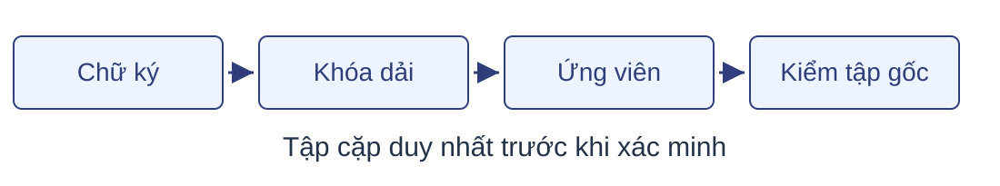
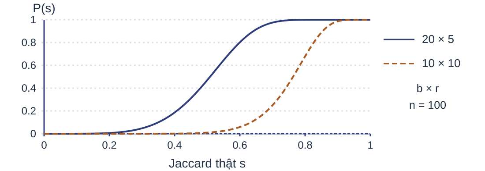
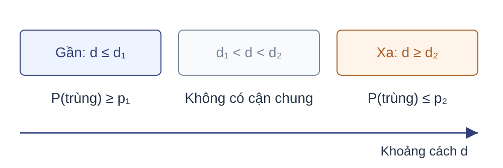
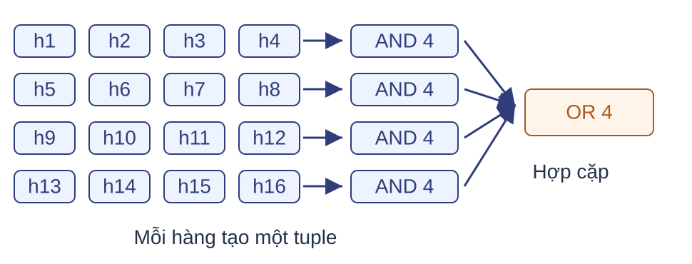
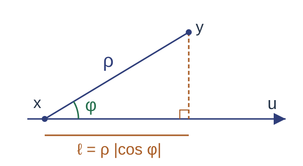
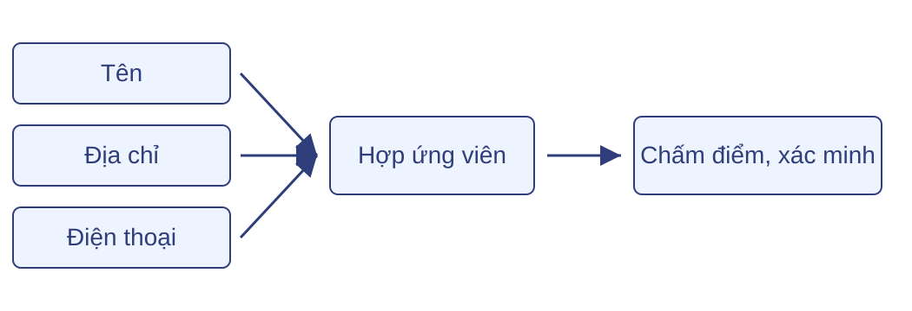

Tìm cặp tương đồng bằng LSH
Băm nhạy cảm theo tính cục bộ (LSH)
Giải thuật nền tảng của Khoa học dữ liệu
Học kỳ 1 · Năm học 2026–2027
Trường Đại học Công nghệ · Đại học Quốc gia Hà Nội
Chữ ký là đầu vào của bước chọn cặp. Việc biểu diễn từng tài liệu đã được giải quyết ở Bài 05; bài này xét việc tổ chức phép so giữa nhiều tài liệu.
Nguồn: Mining of Massive Datasets, ấn bản 3, §§3.4–3.8, tr.91–122.
Nội dung và mục tiêu
Bài toán tìm cặp tương đồng Phân dải chữ ký MinHash Khoảng cách và họ nhạy cảm Các họ băm theo độ đo Ứng dụng tìm cặp tương đồng Tổng kết và tự kiểm tra Bài tập vận dụng Mục tiêu học tập Tạo và xác minh tập cặp ứng viên bằng phân dải chữ ký. Tính xác suất một cặp thành ứng viên; chọn số dải và số hàng. Chọn họ băm phù hợp với độ đo khoảng cách. Phần 1 đặt bài toán: sau khi có chữ ký, số cặp vẫn tăng bậc hai. Phần 2 chia chữ ký thành dải để sinh cặp ứng viên, xác minh chúng, rồi tính xác suất và chi phí. Phần 3 và 4 mở rộng cách làm từ Jaccard sang các độ đo khác qua khái niệm họ băm nhạy cảm. Phần 5 áp dụng vào ba bài toán của sách. Ba mục tiêu được kiểm ở các trang câu hỏi cuối mỗi phần và ở phần tổng kết.
Nguồn: Mining of Massive Datasets, ấn bản 3, §§3.4–3.8, tr.91–122.
Chi phí so sánh mọi cặp chữ ký
$C=10^6$ tài liệu, chữ ký $n=250$ thành phần, 4 byte/thành phần.
Dung lượng chữ ký $10^6\cdot250\cdot4=10^9$ byte
Số cặp cần so $\binom{10^6}{2}=499\,999\,500\,000$
Giả sử mỗi cặp mất $1\,\mu s$: tổng thời gian khoảng $5{,}79$ ngày.
Chữ ký giảm chi phí mỗi cặp; số cặp vẫn tăng bậc hai.
Nguồn: MMDS 3e , Ví dụ 3.10, tr.92.
Ví dụ 3.10 là phép tính minh họa của sách. Nếu bài toán yêu cầu xuất độ tương đồng của mọi cặp thì kích thước đầu ra đã là bậc hai. Nhu cầu ở đây chỉ gồm những cặp đủ tương đồng.
Nguồn: Mining of Massive Datasets, ấn bản 3, Ví dụ 3.10, tr.92.
Bài toán tìm cặp tương đồng
Đầu vào: các tập $S_1,\ldots,S_C$ hữu hạn, không rỗng; ma trận chữ ký $\mathrm{SIG}$ cỡ $n\times C$; ngưỡng $t\in[0,1]$.
Đầu ra: mọi cặp $c<d$ có $\mathrm{SIM}(S_c,S_d)\ge t$.

Chỉ xác minh các cặp ứng viên; đổi lại, cặp đạt ngưỡng có thể bị bỏ sót.
Nguồn: MMDS 3e , §3.4, tr.91–92.
Đặt $s=\mathrm{SIM}(S_c,S_d)$, tính trên hai tập gốc; $\widehat s$ là tỷ lệ thành phần trùng của hai cột chữ ký, phụ thuộc các phép thử đã lấy. $V$ là miền giá trị của một thành phần chữ ký. Bài 05 cho $\Pr[h(S_c)=h(S_d)]=s$ với MinHash lý tưởng: cặp càng tương đồng thì càng dễ trùng thành phần chữ ký, và đó là cơ sở để chọn ứng viên. Xác minh Jaccard cho một cặp là quyết định xác định; việc cặp ấy có được đưa vào tập ứng viên hay không phụ thuộc các phép thử. Hình là sơ đồ của cả quy trình; cách tạo khóa dải từ chữ ký được xây dựng ở phần 2.
Nguồn: Mining of Massive Datasets, ấn bản 3, §3.4, tr.91–92.
Câu hỏi về bài toán tìm cặp
Câu hỏi:
Với $C=10^5$ tài liệu và $1\,\mu s$ mỗi cặp, tính số cặp và tổng thời gian. So với $C=10^6$, số cặp giảm bao nhiêu lần? Trong kho $10^6$ tài liệu, bộ tạo ứng viên trả $10^6$ cặp. Số phép xác minh giảm bao nhiêu lần so với xét mọi cặp? Cặp $S_1,S_4$ của Bài 05 có $\widehat s=1$ trên hai thành phần chữ ký và $s=2/3$. Đại lượng nào quyết định cặp có đạt ngưỡng $t$? Nguồn: MMDS 3e , Ví dụ 3.10, tr.92; số liệu câu 1–2 là dữ kiện luyện tập.
Câu 1: $\binom{10^5}{2}=4\,999\,950\,000$ cặp, khoảng $5\,000$ giây, tức gần 1,4 giờ; giảm số tài liệu 10 lần làm số cặp giảm khoảng 100 lần vì số cặp tăng bậc hai. Câu 2: $499\,999\,500\,000/10^6\approx5\cdot10^5$ lần. Câu 3: quyết định dựa trên $s$, Jaccard của hai tập gốc, tính ở bước xác minh; $\widehat s$ chỉ là tỷ lệ trùng của chữ ký đã lấy, ở đây bằng 1 dù $s=2/3$. Tiêu chí: thấy tăng bậc hai, phân biệt số phép xác minh với số cặp, phân biệt tương đồng thật với ước lượng.
Nguồn: Mining of Massive Datasets, ấn bản 3, Ví dụ 3.10, tr.92; số liệu câu 1–2 là dữ kiện luyện tập.
Ý tưởng phân dải chữ ký
Chia $n=br$ hàng thành $b$ dải. Phần của một cột trong dải là bộ $r$ giá trị có thứ tự (tuple); hai cột trùng dải khi hai tuple bằng nhau. Chung ít nhất một dải → cặp ứng viên. Hai cột càng tương đồng càng dễ trùng ở ít nhất một dải.
Mỗi dải dùng một bảng thùng riêng; cùng bộ giá trị ở hai dải khác nhau không vào cùng thùng.
Nguồn: MMDS 3e , §3.4.1, tr.92–93.
Theo §3.4.1, cách tiếp cận chung là băm mỗi đối tượng nhiều lần sao cho đối tượng tương đồng dễ vào cùng thùng hơn; cặp vào cùng thùng ở ít nhất một lần băm là cặp ứng viên. Với chữ ký MinHash, mỗi dải là một lần băm: phần $r$ giá trị của một cột trong dải tạo thành một bộ có thứ tự (tuple). Cột càng giống nhau thì từng thành phần càng dễ trùng, nên càng dễ trùng toàn bộ một dải. Cặp không tương đồng mà vẫn thành ứng viên là ứng viên giả; cặp tương đồng không thành ứng viên là cặp bị bỏ sót. So hai tuple rẻ hơn nhiều so với đọc hai tập gốc.
Nguồn: Mining of Massive Datasets, ấn bản 3, §3.4.1, tr.92–93.
Ví dụ trùng dải với ba hàng
Chữ ký có $n=12$ hàng, chia $b=4$ dải, mỗi dải $r=3$ hàng.
Dải đầu Cột 1 Cột 2 Cột 3 Cột 4 Cột 5 Hàng 1 1 0 0 0 2 Hàng 2 3 2 1 2 2 Hàng 3 0 1 3 1 1
Tuple ở dải đầu: cột 2 và cột 4 cùng là $(0,2,1)$; cột 3 là $(0,1,3)$.
Cột 2 và 4 thành ứng viên; cột 2 và 3 chỉ trùng một hàng nên chưa trùng dải.
Chỉ dải đầu được cho trong Hình 3.7; chín hàng còn lại chưa có dữ kiện.
Nguồn: MMDS 3e , Hình 3.7, Ví dụ 3.11, tr.93.
Ví dụ 3.11: cột 2 và 4 có cùng tuple $(0,2,1)$ ở dải đầu nên chắc chắn vào cùng thùng của dải này và thành cặp ứng viên, bất kể ba dải còn lại. Sách giả định có rất nhiều thùng, nên hai tuple khác nhau như $(1,3,0)$ và $(0,2,1)$ gần như không va chạm; từ đây xem hai cột cùng thùng khi và chỉ khi tuple bằng nhau. Cột 2 và 3 chỉ trùng hàng đầu nên chưa trùng dải đầu, nhưng vẫn có thể thành ứng viên nếu trùng một trong ba dải chưa được cho.
Nguồn: Mining of Massive Datasets, ấn bản 3, Hình 3.7, Ví dụ 3.11, tr.93.
Phân dải chữ ký của bốn tập
$S_1=\{a,d\},\quad S_2=\{c\}$
$S_3=\{b,d,e\},\quad S_4=\{a,c,d\}$
Dữ kiện Ví dụ 3.8, MMDS; giữ chữ ký từ Bài 05.
Hàng $S_1$ $S_2$ $S_3$ $S_4$ 1 1 3 0 1 2 0 2 0 0
$b=2,\quad r=1,\quad t=2/3$
Với $r=1$, mỗi hàng là một dải. Khóa của cột $c$ ở dải $j$ là cặp $(j,\text{tuple})$.
Nguồn: MMDS 3e , Ví dụ 3.8, tr.85–86; áp dụng §3.4.1.
Các chữ ký thuộc Ví dụ 3.8 của sách. Hai hàm cố định chỉ dùng chạy thuật toán; định lý xác suất ở phần sau xét mô hình hoán vị đều độc lập. Với một hàng mỗi dải, tuple có một thành phần.
Nguồn: Mining of Massive Datasets, ấn bản 3, Ví dụ 3.8, tr.85–86; áp dụng §3.4.1.
Thùng của dải 1
Tài liệu Giá trị dải 1 1 1 2 3 3 0 4 1
Khóa (dải, tuple) Danh sách mã $(1,(1))$ 1, 4 $(1,(3))$ 2 $(1,(0))$ 3
Cặp phát ở dải 1: $(1,4)$.
Lần chèn tài liệu 4 tạo thùng có hai phần tử; thùng đơn không phát cặp.
Nguồn: MMDS 3e , §3.4.1, tr.92–93; dữ kiện Ví dụ 3.8.
Sau bốn lượt chèn, mỗi tài liệu xuất hiện đúng một lần trong thùng của nó ở dải 1. Chỉ một thùng có hai phần tử nên chỉ phát cặp (1,4). Mã dải là một thành phần của khóa, khác giá trị chữ ký 1.
Nguồn: Mining of Massive Datasets, ấn bản 3, §3.4.1, tr.92–93; dữ kiện Ví dụ 3.8.
Hợp các cặp qua hai dải
Khóa dải 2 Mã Cặp phát $(2,(0))$ 1, 3, 4 (1,3), (1,4), (3,4) $(2,(2))$ 2 ∅
Dải 1 đã phát $(1,4)$.
Số lượt phát trước khử lặp: $Q=1+3=4$.
Tập ứng viên sau khử lặp:
$\mathcal C=\{(1,3),(1,4),(3,4)\}$
Số cặp phân biệt: $K=|\mathcal C|=3$.
Cặp (1,4) phát hai lần nhưng chỉ được xác minh một lần.
Nguồn: MMDS 3e , §3.4.1–3, tr.92–96.
$Q$ đếm lượt trước khử lặp; $K$ đếm cặp phân biệt. Một cặp được sinh nhiều lần vẫn chỉ xác minh một lần khi lưu trong tập. Khóa có số dải nên giá trị 0 ở dải 1 không tự ghép với 0 ở dải 2.
Nguồn: Mining of Massive Datasets, ấn bản 3, §3.4.1–3, tr.92–96.
Xác minh bằng Jaccard gốc
Giữ cặp có Jaccard gốc ít nhất $t=2/3$.
Cặp Giao Hợp Jaccard Kết quả (1,3) {d} {a,b,d,e} $1/4$ Loại (1,4) {a,d} {a,c,d} $2/3$ Giữ (3,4) {d} {a,b,c,d,e} $1/5$ Loại
Kết quả là $\{(1,4)\}$; hai cặp $(1,3)$ và $(3,4)$ là ứng viên giả.
Xác minh chỉ loại ứng viên giả; nó không khôi phục cặp đạt ngưỡng chưa được sinh.
Nguồn: MMDS 3e , §3.4.3, tr.95–96.
Hợp của $S_1$ và $S_3$ là $\{a,b,d,e\}$; hợp của $S_1$ và $S_4$ là $\{a,c,d\}$; hợp của $S_3$ và $S_4$ là $\{a,b,c,d,e\}$. Cặp $(1,3)$ và $(3,4)$ là ứng viên giả ở tầng tạo cặp. Xác minh không thể khôi phục một cặp đạt ngưỡng đã bị bỏ sót bởi phân dải.
Nguồn: Mining of Massive Datasets, ấn bản 3, §3.4.3, tr.95–96.
Đặc tả phân dải và xác minh
Đầu vào: $\mathrm{SIG}\in V^{n\times C}$; $b,r$ nguyên dương, $n=br$; các tập $S_1,\ldots,S_C$; ngưỡng $t\in[0,1]$.
Khóa dải $k_{j,c}=\bigl(j,\mathrm{SIG}_{(j-1)r+1:jr,c}\bigr)$
Tập ứng viên: $\mathcal C=\{(c,d):c<d,\ \exists j:\ k_{j,c}=k_{j,d}\}$.
Đầu ra: $\{(c,d)\in\mathcal C:\ \mathrm{SIM}(S_c,S_d)\ge t\}$.
Nguồn: MMDS 3e , §3.4.1,3.4.3, tr.92–96.
Hàm băm bảng chỉ định nơi tra cứu; phép bằng vẫn so cả số dải và tuple. Điều kiện tồn tại một dải giải thích phép hợp ứng viên. Đầu ra dùng thứ tự $c<d$ để hai cách gọi một cặp có cùng biểu diễn. Các tập $S_c$ hữu hạn, không rỗng để Jaccard xác định. Đặc tả chưa nói mọi cặp đạt ngưỡng đều nằm trong $\mathcal C$; khả năng bỏ sót được phân tích ở các trang xác suất.
Nguồn: Mining of Massive Datasets, ấn bản 3, §3.4.1,3.4.3, tr.92–96.
Thuật toán phân dải và xác minh
B ← từ điển rỗng; CAND ← tập rỗng
với j = 1,…,b và c = 1,…,C:
z ← bản sao SIG[(j−1)r+1 : jr, c]
k ← (j, z)
nếu k chưa có trong B: B[k] ← []
B[k].append(c)
với mỗi danh sách L trong B:
với mỗi c < d thuộc L: CAND.add((c,d))
OUT ← tập rỗng
với mỗi (c,d) trong CAND:
nếu SIM(S_c,S_d) ≥ t: OUT.add((c,d))
trả OUTVết chạy $b=2,r=1$ $bC=8$ lượt chèn
$Q=4$ lượt phát cặp
$K=3$ lần kiểm Jaccard
1 cặp kết quả
Nguồn: MMDS 3e , §3.4.1,3.4.3, tr.92–96.
Khóa được sao chép để phân tích bộ nhớ thống nhất. Khi khóa chưa có trong từ điển, thuật toán tạo danh sách rỗng rồi mới nối mã tài liệu; khi khóa đã có, thuật toán nối vào danh sách hiện tại. Các vòng lặp đều trên tập hữu hạn. Tập CAND khử lặp sau mỗi lần phát. Jaccard gốc được tính trực tiếp cho mỗi cặp duy nhất; bỏ kiểm chữ ký ở bước 6 của sách và bắt buộc kiểm gốc trên mọi ứng viên. Trong sách, bước 7 kiểm gốc mới được ghi là tùy chọn.
Nguồn: Mining of Massive Datasets, ấn bản 3, §3.4.1,3.4.3, tr.92–96.
Tính đúng của phân dải
Bất biến: ở dải đang xét, mỗi mã đã xử lý thuộc đúng nhóm khóa của nó.
Bước Lập luận Khởi tạo Trước dải đầu, $B$ rỗng. Đầu dải $j$, chưa có khóa mang $j$; giữ các dải trước. Duy trì Tạo danh sách nếu khóa mới, rồi nối mã vào đúng nhóm. Kết thúc Hai mã cùng nhóm khi và chỉ khi cùng khóa; phát cặp trong mọi nhóm rồi hợp cho đúng $\mathcal C$.
Đầu ra gồm đúng các cặp trong $\mathcal C$ có $s\ge t$; cặp ngoài $\mathcal C$ không được xét.
Các vòng lặp hữu hạn; $C<2$ hoặc thùng có dưới hai phần tử không phát cặp.
Nguồn: MMDS 3e , §3.4.1,3.4.3, tr.92–96.
Chứng minh theo số lượt chèn ở từng dải. Trước dải đầu tiên, từ điển $B$ rỗng. Ở đầu mỗi dải $j$, chưa có khóa mang chỉ số $j$, còn các nhóm của những dải trước được giữ nguyên. Vì chưa xử lý mã nào ở dải $j$, bất biến của dải này đúng. Nếu khóa mới, danh sách rỗng được tạo trước khi nối mã; nếu khóa đã có, các mã trước đó được giữ nguyên. Mỗi lượt bổ sung đúng một mã vào nhóm khóa của nó và không chuyển mã khác. Khi dựng thùng kết thúc, phát mọi cặp trong từng thùng cho đúng quan hệ tồn tại dải; phép hợp khử lặp. Kiểm Jaccard gốc xác định đầu ra trong tập ứng viên. Đầu vào của đặc tả là các tập hữu hạn không rỗng; tập rỗng nằm ngoài miền phân tích này.
Nguồn: Mining of Massive Datasets, ấn bản 3, §3.4.1,3.4.3, tr.92–96.
Xác suất trùng trong một dải
Cặp tập không rỗng cố định có Jaccard s; các MinHash lý tưởng được chọn đều, độc lập.
$E_i=\{\text{trùng thành phần hàng }i\},\quad\Pr(E_i)=s$
$\Pr(E_1\cap\cdots\cap E_r)=s^r$
Với $s=.8,r=5$: $.8^5=.32768$ và $1-.32768=.67232$.
Nguồn: MMDS 3e , §3.4.2, tr.93–94.
Tính độc lập thuộc các lần chọn hàm, chưa thuộc các cặp dữ liệu. Hai hàm cố định trong ví dụ đã cho không được dùng để suy công thức này. Giá trị $s=.8$ là tương đồng thật, không là tỷ lệ trùng của một chữ ký quan sát.
Nguồn: Mining of Massive Datasets, ấn bản 3, §3.4.2, tr.93–94.
Xác suất tạo ứng viên
Các dải dùng các phép thử độc lập; một cặp được chọn khi ít nhất một dải trùng.
$\Pr(\text{không dải nào trùng})=(1-s^r)^b$
$P_{b,r}(s)=1-(1-s^r)^b$
Với $b=20,r=5,s=.8$:
$P_{20,5}(.8)\approx.999643942$
Lấy biến cố bù chuyển “ít nhất một dải” thành phép nhân.
Nguồn: MMDS 3e , §3.4.2, tr.93–95.
Xác suất bỏ sót tại một cặp đạt ngưỡng là $1-P(s)$. Các nhóm hàng độc lập vì toàn bộ các MinHash thành phần độc lập. Cặp dữ liệu được giữ cố định suốt phép suy. Với $r=1$, đường xác suất lõm và không có đầy đủ dạng chữ S.
Nguồn: Mining of Massive Datasets, ấn bản 3, §3.4.2, tr.93–95.
Ngưỡng và lựa chọn số dải

Ngưỡng chấp nhận $t=.8$; xét $(b,r)=(20,5)$.
Điểm xác suất một nửa: $P(s_{1/2})=1/2$, $s_{1/2}\approx.508696$.
Xấp xỉ điểm chuyển tiếp: $b^{-1/r}\approx.549280$.
Nguồn: MMDS 3e , Ví dụ 3.12, tr.94–95; Bài 3.4.2, tr.96.
Tại $s=.8$, cấu hình 20 × 5 bỏ sót khoảng .035606%; 10 × 10 khoảng 32.114003%. Đây là xác suất có điều kiện theo $s$, không là tỷ lệ lỗi của một kho chưa biết phân bố tương đồng. Phương trình $P(s)=1/2$ cho $s^r=1-2^{-1/b}$, nên $s_{1/2}=(1-2^{-1/b})^{1/r}$. Giá trị $b^{-1/r}$ xấp xỉ vùng chuyển tiếp; nó không bằng nghiệm xác suất một nửa hoặc ngưỡng chấp nhận $t$.
Nguồn: Mining of Massive Datasets, ấn bản 3, Ví dụ 3.12, tr.94–95; Bài 3.4.2, tr.96.
Chi phí tạo và xác minh ứng viên
$u_{j,z}$ là số mã tài liệu trong thùng $(j,z)$.
Chữ ký đã có; tuple được sao chép; bảng băm kỳ vọng O(1) sau khi xử lý khóa.
Pha Công việc Chi phí kỳ vọng Dựng thùng $bC$ tuple, mỗi tuple dài $r$ $O(nC)$ Phát và khử lặp $Q=\sum_{j,z}\binom{u_{j,z}}2$ $O(Q)$ Kiểm tập gốc $K=|\mathcal C|$ cặp duy nhất $\sum_{(c,d)\in\mathcal C}T_J(c,d)$
$O(nC+Q+\sum T_J),\qquad\text{bộ nhớ phụ }O(nC+K)$
Ngoài SIG đầu vào. Tập sắp xếp: $T_J=O(|S_c|+|S_d|)$. Xấu nhất $K=\binom C2$.
Nguồn: MMDS 3e , §3.4; phân tích chi phí từ thủ tục phân dải.
$u_{j,z}$ là số mã tài liệu trong thùng $(j,z)$. Xử lý mỗi khóa dài $r$ tốn $O(r)$; kỳ vọng bảng băm được tính sau xử lý khóa. Các tập đã sắp xếp cho $T_J(c,d)=O(|S_c|+|S_d|)$. Khóa sao chép tối đa $nC$ từ, danh sách $bC$ mã, tập cặp $K$ phần tử. Nếu mọi cột chung mỗi thùng thì $K=\binom C2$.
Nguồn: Mining of Massive Datasets, ấn bản 3, §3.4; phân tích chi phí từ thủ tục phân dải.
Kiểm tra phân dải và xác minh
Câu hỏi:
$S_1=\{a,d\},\quad S_2=\{c\}$
$S_3=\{b,d,e\},\quad S_4=\{a,c,d\}$
Hàng $S_1$ $S_2$ $S_3$ $S_4$ 1 1 3 0 1 2 0 2 0 0
Với $b=2,r=1,t=2/3$, tính $Q$, $K$ và tập kết quả sau xác minh. Trong mô hình MinHash độc lập, viết $P_{2,1}(s)$. Vì sao hai hàm cố định trên không tự chứng minh công thức xác suất? Nguồn: MMDS 3e , Ví dụ 3.8; §3.4.2.
Đáp án: cặp $(1,4)$ được phát hai lần; tập ứng viên là $\{(1,3),(1,4),(3,4)\}$; chỉ cặp $(1,4)$ đạt ngưỡng. Do đó $Q=4,K=3$. Trong mô hình hai thành phần MinHash lý tưởng độc lập, xác suất được chọn của cặp có Jaccard $s$ là $1-(1-s)^2$. Tiêu chí: phân biệt lượt phát và cặp duy nhất, kiểm Jaccard trên tập gốc và nêu đúng nguồn ngẫu nhiên.
Nguồn: Mining of Massive Datasets, ấn bản 3, Ví dụ 3.8; §3.4.2.
Khoảng cách giữa hai điểm
MinHash gắn với Jaccard; tìm cặp vector hoặc chuỗi cần xác định độ đo phù hợp.
$x=(2,7),\quad y=(6,4)$
$L_1=4+3=7$
$L_2=\sqrt{4^2+3^2}=5$
$L_\infty=\max(4,3)=4$
Nguồn: MMDS 3e , Ví dụ 3.13, tr.98.
Đoạn thẳng nối hai điểm cho khoảng cách Euclid. Đường đi theo hai trục có tổng độ dài 7. Độ lệch lớn nhất bằng 4. Các giá trị mô tả ba cách đo, không phải ba ước lượng của cùng một đại lượng.
Nguồn: Mining of Massive Datasets, ấn bản 3, Ví dụ 3.13, tr.98.
Độ đo khoảng cách
Khoảng cách trên miền X $d(x,y)\ge0$. $d(x,y)=0\iff x=y$. $d(x,y)=d(y,x)$. $d(x,z)\le d(x,y)+d(y,z)$. Chuẩn trên vector $x,y\in\mathbb R^D,\ q\ge1$
$\|x-y\|_q=\left(\sum_{i=1}^D|x_i-y_i|^q\right)^{1/q}$
$\|x-y\|_\infty=\max_i|x_i-y_i|$
Miền và điều kiện tham số là một phần của định nghĩa.
Nguồn: MMDS 3e , §3.5.1–2, tr.97–98.
Không âm là miền giá trị của $d$; điều kiện bằng 0 tách điểm; đối xứng không phụ thuộc thứ tự cặp; bất đẳng thức tam giác chặn đường trực tiếp bằng đường qua điểm thứ ba. Tuyến bài dùng $q=1,2,\infty$.
Nguồn: Mining of Massive Datasets, ấn bản 3, §3.5.1–2, tr.97–98.
Khoảng cách Jaccard
Các tập hữu hạn không rỗng; cặp đã có: $d_J(S_1,S_4)=1-2/3=1/3$.
$d_J(A,B)=1-\frac{|A\cap B|}{|A\cup B|}=\Pr[h(A)\ne h(B)]$
Dùng cùng một MinHash lý tưởng $h$ cho cả ba tập:
$\{h(A)\ne h(C)\}\subseteq\{h(A)\ne h(B)\}\cup\{h(B)\ne h(C)\}$
$d_J(A,C)\le d_J(A,B)+d_J(B,C)$
Lấy xác suất rồi chặn hợp; không cần độc lập giữa hai biến cố.
Nguồn: MMDS 3e , §3.5.3, tr.98–99.
Nếu $h(A)\ne h(C)$ thì không thể đồng thời $h(A)=h(B)$ và $h(B)=h(C)$. Định lý MinHash cho $\Pr[h(A)=h(B)]=\mathrm{SIM}(A,B)$; lấy bù được $\Pr[h(A)\ne h(B)]=d_J(A,B)$. Cặp $S_1,S_4$ có Jaccard $2/3$ nên khoảng cách $1/3$. Lấy xác suất của bao hàm sự kiện và chặn hợp cho $d_J(A,C)\le d_J(A,B)+d_J(B,C)$. Không cần ba sự kiện độc lập. Các tiên đề còn lại theo định nghĩa giao, hợp trên tập không rỗng.
Nguồn: Mining of Massive Datasets, ấn bản 3, §3.5.3, tr.98–99.
Khoảng cách góc
$x=(1,2,-1),\quad y=(2,1,1)$
Tích và chuẩn $x\cdot y=3$
$\|x\|_2=\|y\|_2=\sqrt6$
Góc $\cos\theta=\frac{3}{6}=\frac12$
$\theta=\pi/3=60^\circ$
Góc là khoảng cách trên các hướng, hoặc các vector đơn vị.
$x$ và $2x$ cùng hướng; $1-\cos\theta$ khác $\theta$. Vector 0 không có hướng.
Nguồn: MMDS 3e , Ví dụ 3.14, tr.99.
Cosin là độ tương đồng bằng $1/2$ trong ví dụ; khoảng cách góc bằng $\pi/3$. Hai bội dương có góc 0 nên chỉ xem góc là metric sau đồng nhất hướng hoặc chuẩn hóa. Hai vector đối hướng có góc $\pi$. Phép băm dấu phần 4 sử dụng đúng góc này.
Nguồn: Mining of Massive Datasets, ấn bản 3, Ví dụ 3.14, tr.99.
Khoảng cách chỉnh sửa chuỗi
Khoảng cách chỉnh sửa là số thao tác ít nhất để biến chuỗi này thành chuỗi kia; mỗi bước chèn hoặc xóa một ký tự.
$abcde\to acde\to acfde\to acfdeg$
Thao tác Chuỗi sau thao tác Xóa b acde Chèn f acfde Chèn g acfdeg
$d_{\rm edit}(x,y)=|x|+|y|-2L=5+6-2\cdot4=3$
Dãy con chung dài nhất là acde, dài L=4; dãy con không cần liên tiếp.
Nguồn: MMDS 3e , Ví dụ 3.15–16, tr.100.
Một phương án tối ưu giữ một dãy con chung và xóa/chèn các ký tự khác. Giữ $L$ ký tự cần $|x|-L$ lần xóa và $|y|-L$ lần chèn. Ngược lại, các ký tự không bị xóa tạo thành dãy con chung nên không giữ quá $L$. Đây là lập luận giá trị tối ưu, không cung cấp thuật toán quy hoạch động tính LCS.
Nguồn: Mining of Massive Datasets, ấn bản 3, Ví dụ 3.15–16, tr.100.
Khoảng cách Hamming
Chỉ số 1 2 3 4 5 x 1 0 1 0 1 y 1 1 1 1 0 So sánh Trùng Khác Trùng Khác Khác
$d_H(x,y)=\sum_{i=1}^D\mathbf1[x_i\ne y_i]=3$
$\mathbf1[E]=1$ nếu $E$ đúng, bằng 0 nếu $E$ sai.
Hamming đếm vị trí khác trên hai vector cùng chiều.
Nguồn: MMDS 3e , Ví dụ 3.17, tr.101.
Nếu $x_i\ne z_i$ thì ít nhất một trong $x_i\ne y_i$ hoặc $y_i\ne z_i$ đúng. Cộng theo tọa độ cho bất đẳng thức tam giác. Khi xây họ chọn tọa độ, giả thiết $D>0$ cần để có phân phối đều.
Nguồn: Mining of Massive Datasets, ấn bản 3, Ví dụ 3.17, tr.101.
Họ băm nhạy cảm
$0\le d_1<d_2,\quad0\le p_2<p_1\le1$; $\mathcal H$ là họ hàm kèm phân phối.

Cặp $x,y$ cố định; xác suất theo $h\sim\mathcal H$, cùng $h$ băm hai đối tượng.
Họ (d₁,d₂,p₁,p₂)-nhạy cảm được xác định bởi hai cận.
Nguồn: MMDS 3e , §3.6.1, tr.103–104.
Độ đo xác định cặp gần và xa; một họ băm phải có phân phối lấy mẫu và hai cận xác suất tương ứng. Nguồn ngẫu nhiên là phép lấy $h$ từ họ có phân phối. Với dữ liệu và $h$ đã cố định, kết quả trùng là xác định. Định nghĩa chỉ đòi hai cận; không đòi đẳng thức giữa xác suất va chạm và một độ tương đồng.
Nguồn: Mining of Massive Datasets, ấn bản 3, §3.6.1, tr.103–104.
Họ MinHash theo Jaccard
Với khoảng cách Jaccard $d=1-s$:
$\Pr[h(A)=h(B)]=1-d_J(A,B)$
Cặp gần $d\le.3\ \Rightarrow\ P(\text{trùng})\ge.7$
Cặp xa $d\ge.6\ \Rightarrow\ P(\text{trùng})\le.4$
$(d_1,d_2,1-d_1,1-d_2),\quad0\le d_1<d_2\le1$
MinHash cho họ (.3, .6, .7, .4)-nhạy cảm.
Nguồn: MMDS 3e , Ví dụ 3.18, tr.105.
Từ tính đơn điệu giảm của $1-d$, miền gần cho cận dưới còn miền xa cho cận trên. Hai ngưỡng không quyết định hành vi trong miền giữa. Họ này sử dụng kết quả MinHash, không phải một chứng minh mới của định lý MinHash.
Nguồn: Mining of Massive Datasets, ấn bản 3, Ví dụ 3.18, tr.105.
Phép ghép đồng thời
Với một cặp cố định, mỗi phép thử trùng với xác suất $p$.
Phép ghép đồng thời (AND): chọn r phép thử độc lập và nhận cặp khi tất cả trùng.
$g(x)=(h_1(x),\ldots,h_r(x))$
$\Pr[g(x)=g(y)]=p^r$
Hai cận mới: $p_1^r$ và $p_2^r$.
p r=4 Sau AND 0.8 4 0.4096 0.4 4 0.0256
Phép nhân dùng độc lập; tính đơn điệu chuyển cận của họ.
Nguồn: MMDS 3e , §3.6.3, tr.105–106.
Cặp dữ liệu được giữ cố định; mỗi phép thử cơ sở trùng với xác suất $p$. Sự kiện bằng tuple là giao của $r$ sự kiện trùng. Độc lập cho tích $p^r$. Hàm $p\mapsto p^r$ tăng trên [0,1], nên bảo toàn hướng hai cận gần/xa. Khi $r>1$, xác suất trong (0,1) giảm; nhiều cặp gần cũng khó được chọn hơn.
Nguồn: Mining of Massive Datasets, ấn bản 3, §3.6.3, tr.105–106.
Phép ghép ít nhất một
Phép ghép ít nhất một (OR): chọn b phép thử độc lập và nhận cặp khi ít nhất một thử trùng.
$\Pr(\text{không thử nào trùng})=(1-p)^b$
$\Pr(\text{được nhận})=1-(1-p)^b$
Hai cận mới: $1-(1-p_1)^b$ và $1-(1-p_2)^b$.
OR là quyết định cặp qua nhiều bảng; quan hệ này có thể không bắc cầu.
Nguồn: MMDS 3e , §3.6.3, tr.106–107.
Không có phép thử trùng có xác suất $(1-p)^b$. Lấy bù cho OR; biểu thức tăng theo $p$ nên chuyển hai cận được. Quan hệ “trùng ở ít nhất một bảng” có thể không bắc cầu; nói chung nó không là phép bằng của một mã đơn.
Nguồn: Mining of Massive Datasets, ấn bản 3, §3.6.3, tr.106–107.
Thứ tự ghép và xác suất
Họ (.2, .6, .8, .4), cùng 16 phép thử cơ sở độc lập.
Thứ tự Biến đổi xác suất Cận gần Cận xa AND 4 → OR 4 $F(p)=1-(1-p^4)^4$ .878497 .098535 OR 4 → AND 4 $G(p)=[1-(1-p)^4]^4$ .993615 .573952
Cấu trúc nhận cặp gần nhiều hơn cũng có thể nhận cặp xa nhiều hơn.
Các số là cận được biến đổi từ p₁, p₂; không là xác suất chính xác của mọi cặp.
Nguồn: MMDS 3e , Ví dụ 3.19–20, tr.106–108.
AND–OR cho cận xa nhỏ hơn nhưng cận gần cũng nhỏ hơn. OR–AND giữ cặp gần nhiều hơn đồng thời nhận cặp xa nhiều hơn. Hai kết luận cùng được đọc từ bảng; không có thứ tự tốt hơn vô điều kiện theo cả hai loại lỗi. Các số trong bảng là cận dưới gần và cận trên xa được biến đổi từ $p_1,p_2$; chỉ một cặp có xác suất cơ sở đúng bằng $p$ mới có xác suất ghép đúng bằng $F(p)$ hoặc $G(p)$.
Nguồn: Mining of Massive Datasets, ấn bản 3, Ví dụ 3.19–20, tr.106–108.
Cơ chế thực hiện phép ghép

AND $r$ rồi OR $b$: tính $br$ giá trị → tạo $b$ tuple → tra $b$ bảng → hợp cặp.
Số phép thử đo chi phí tính hàm; kích thước thùng quyết định số lượt phát cặp.
Nguồn: MMDS 3e , §3.6.3, tr.105–108.
Trong cấu trúc AND rồi OR, mỗi nhóm AND lưu trực tiếp một tuple; bước OR hợp các tập cặp qua nhiều bảng. Với thứ tự OR rồi AND, mỗi nhóm OR hợp các cặp từ các bảng cơ sở của nhóm, rồi bước AND lấy giao các tập cặp của những nhóm ấy. Quan hệ OR không được thay bằng phép bằng nhau của một tuple. Dù việc tính hàm băm ít tốn kém, thùng lớn vẫn phát nhiều cặp. Giá trị $br$ chỉ đo số phép thử cơ sở, mỗi phép có chi phí tùy họ.
Nguồn: Mining of Massive Datasets, ấn bản 3, §3.6.3, tr.105–108.
Kiểm tra độ đo và phép ghép
Câu hỏi:
Với họ $(.3,.6,.7,.4)$, nêu bảo đảm tại $d=.2$, $d=.8$ và điều có thể kết luận tại $d=.5$. Viết xác suất AND 2 rồi OR 3 của cặp có xác suất cơ sở $p$; nêu giả thiết. Hai vector $x,2x$ khác 0 có góc bao nhiêu? Miền metric phải hiểu thế nào? Nguồn: MMDS 3e , §3.5.4; Ví dụ 3.18; Bài 3.6.1.
Với $d=.2$, xác suất trùng ít nhất .7; với $d=.8$, xác suất trùng không quá .4. Tại $d=.5$, định nghĩa họ không đưa ra bảo đảm chung. AND 2 rồi OR 3 cho $1-(1-p^2)^3$ khi các phép thử độc lập. Hai vector $x,2x$ có góc 0; chúng biểu diễn cùng một hướng. Góc là metric trên các hướng hoặc trên vector đơn vị. Tiêu chí: giữ đúng hai cận và miền giữa, nêu độc lập, xác định đúng miền metric.
Nguồn: Mining of Massive Datasets, ấn bản 3, §3.5.4; Ví dụ 3.18; Bài 3.6.1.
Băm bằng một tọa độ
Tính metric chưa bảo đảm có họ LSH; mỗi độ đo cần một phép thử và chứng minh riêng.
Chỉ số I 1 2 3 4 5 x 1 0 1 0 1 y 1 1 1 1 0 Trùng? Có Không Có Không Không
$h_I(x)=x_I$
I = 1 Hai giá trị 1 và 1: trùng.
I = 2 Hai giá trị 0 và 1: khác.
Cùng một chỉ số được dùng để băm mọi vector.
Nguồn: MMDS 3e , §3.7.1, tr.109.
Một lần chọn $I$ định nghĩa một hàm cho toàn bộ dữ liệu. Mỗi lần tính chỉ đọc một tọa độ nếu truy cập mảng mất thời gian hằng. Chọn chỉ số riêng cho từng vector sẽ không tạo cùng một phép thử.
Nguồn: Mining of Massive Datasets, ấn bản 3, §3.7.1, tr.109.
Xác suất va chạm Hamming
$D>0$; chọn $I$ đều trong $\{1,\ldots,D\}$.
$\Pr[h_I(x)=h_I(y)]=\frac{D-d_H(x,y)}D=1-\frac{d_H(x,y)}D$
$D=5,\quad d_H=3\quad\Rightarrow\quad P=2/5$
Ghép nhiều phép thử: lấy chỉ số độc lập, có hoàn lại.
Nguồn: MMDS 3e , §3.7.1, tr.109.
Mỗi chỉ số có xác suất $1/D$, nên cộng trên $D-d_H$ chỉ số cho kết quả. Khi ghép, lấy có hoàn lại giúp các chỉ số độc lập. Chọn các chỉ số khác nhau không tự cho công thức $p^r$.
Nguồn: Mining of Massive Datasets, ấn bản 3, §3.7.1, tr.109.
Dấu của tích vô hướng
$x=(3,4,5,6),\ y=(4,3,2,1)$
$v_1=(1,-1,1,1)$
$v_1\cdot x=3-4+5+6=10$
$v_1\cdot y=4-3+2+1=4$
Hai vector cùng dấu +.
$h_v(x)=\operatorname{sign}(v\cdot x)$, với $\operatorname{sign}(0)=+1$.
Nguồn: MMDS 3e , Ví dụ 3.22, tr.111.
Một pháp tuyến $v$ phải được giữ cố định khi băm mọi vector. Dấu bằng 0 có quy tắc thống nhất để hàm xác định. Vết số dùng pháp tuyến dấu của sách và chỉ minh họa phép tính, chưa thể hiện phân phối đẳng hướng.
Nguồn: Mining of Massive Datasets, ấn bản 3, Ví dụ 3.22, tr.111.
Chữ ký dấu và góc ước lượng
$x=(3,4,5,6),\quad y=(4,3,2,1)$
Pháp tuyến Tích với x Tích với y Hai dấu $v_1=(1,-1,1,1)$ 10 4 +, + $v_2=(-1,1,-1,1)$ 2 -2 +, − $v_3=(1,1,-1,-1)$ -4 4 −, +
Đẳng hướng cho $p_{\ne}=\theta/\pi$; quy tắc ước lượng là $\widehat\theta=\pi\widehat p_{\ne}$, với $\widehat p_{\ne}$ là tỷ lệ bit khác.
$\widehat\theta=\pi\cdot\frac23=120^\circ,\qquad\theta\approx38.05^\circ$
Ba pháp tuyến dấu cố định minh họa phép tính; chúng không có phân phối đẳng hướng.
Nguồn: MMDS 3e , Ví dụ 3.22, tr.111.
Với pháp tuyến đẳng hướng, xác suất khác dấu $p_{\ne}=\theta/\pi$. Thay xác suất bằng tỷ lệ bit khác quan sát được cho quy tắc $\widehat\theta=\pi\widehat p_{\ne}$. Ba pháp tuyến dấu ở bảng là dữ kiện cố định; áp quy tắc này chỉ tạo một giá trị ước lượng, không nhận bảo đảm của mô hình đẳng hướng. Quan hệ xác suất được chứng minh bằng hình học ở phần siêu phẳng. $\theta=\arccos(40/\sqrt{86\cdot30})\approx38.047579^\circ$. Có hai nguồn khác biệt: mẫu hữu hạn và pháp tuyến dấu ±1 không đẳng hướng. Nếu xét đủ 16 vector dấu với sign (0)=+1, có 4 trường hợp trái dấu nên góc ước lượng 45°, vẫn khác góc thật.
Nguồn: Mining of Massive Datasets, ấn bản 3, Ví dụ 3.22, tr.111.
Xác suất cùng phía siêu phẳng
$x,y\ne0$; pháp tuyến đẳng hướng.
$\theta\in[0,\pi]$ đo radian; cùng $h$ cho mọi vector.
$\Pr(\text{khác dấu})=\frac{2\theta}{2\pi}$
$\Pr(\text{cùng dấu})=1-\frac\theta\pi$
$\theta=\pi/3\Rightarrow P=2/3$.
Nguồn: MMDS 3e , §3.7.2, tr.109–110.
Nếu $\theta=0$, hai vector cùng hướng và cùng dấu với xác suất 1. Nếu $\theta=\pi$, chúng đối hướng và khác dấu với xác suất 1, nên xác suất trùng bằng 0; trường hợp tích vô hướng bằng 0 có xác suất 0 dưới phân phối liên tục đẳng hướng. Khi $0<\theta<\pi$, hai vector không cùng phương và sinh một mặt phẳng. Tính đẳng hướng làm hướng pháp tuyến chiếu vào mặt phẳng này có phân phối đều. Các hướng tách hai vector chiếm tỷ lệ $\theta/\pi$; lấy bù được xác suất cùng dấu. Quy tắc dấu tại 0 vẫn được cố định để hàm xác định.
Nguồn: Mining of Massive Datasets, ấn bản 3, §3.7.2, tr.109–110.
Chiếu điểm vào các khoảng
$p_1=(1,2,3),\ p_2=(0,2,4),\ p_3=(4,3,2)$
Chỉ xét trục thứ nhất, $a=1$: $h_1(x)=\lfloor x_1/a\rfloor$.
Điểm Tọa độ chiếu Khoảng chứa Mã p₁ 1 [1,2) 1 p₂ 0 [0,1) 0 p₃ 4 [4,5) 4
Biên trái đóng, biên phải mở; ba mã khác nhau nên chưa có cặp.
Nguồn: MMDS 3e , Bài 3.7.5, tr.114; minh họa trục thứ nhất.
Hàm theo trục thứ nhất là $h_1(x)=\lfloor x_1/a\rfloor$. Với ba điểm đã cho và $a=1$, các mã ở trục thứ nhất là 1,0,4 nên chưa tạo cặp. Đây là thực thi trên trục cố định của bài tập nguồn, không là phép kiểm bảo đảm xác suất của họ hướng ngẫu nhiên.
Nguồn: Mining of Massive Datasets, ấn bản 3, Bài 3.7.5, tr.114; minh họa trục thứ nhất.
Họ chiếu với dịch ngẫu nhiên
Trong $\mathbb R^2$, $u$ đều hướng đơn vị; $a>0$.
$\delta\sim\operatorname{Unif}[0,a)$ độc lập với $u$.
$h_{u,\delta}(x)=\left\lfloor\frac{u\cdot x+\delta}{a}\right\rfloor$
Cùng $(u,\delta)$ cho mọi điểm.
Nguồn: MMDS 3e , §3.7.4, tr.111–113; dịch đều: Datar và cộng sự, §3.2.
Phép dịch tránh việc một biên cố định luôn tách một cặp gần nằm hai phía biên ấy. Công thức lượng tử hóa với dịch đều được đối chiếu Datar §3.2; hướng đơn vị đều trong mặt phẳng và cận hai chiều là mô hình MMDS được hoàn thiện giả thiết.
Nguồn: Mining of Massive Datasets, ấn bản 3, §3.7.4, tr.111–113; dịch đều: Datar và cộng sự, §3.2.
Xác suất chung khoảng chiếu
Cố định $u$, đặt $\ell=|u\cdot(x-y)|$.
0 ≤ ℓ < a Trong một chu kỳ dài $a$, biên tách hai hình chiếu chiếm độ dài $\ell$.
$\Pr_\delta(\text{khác thùng}\mid u)=\ell/a$
ℓ ≥ a Hai điểm không thể nằm trong cùng một khoảng nửa mở rộng a.
$\Pr_\delta(\text{chung thùng}\mid u)=0$
$\Pr_\delta[h(x)=h(y)\mid u]=\max(0,1-\ell/a)$
Nguồn: MMDS 3e , §3.7.4; chứng minh với dịch đều độc lập.
Khi $\ell<a$, vị trí biên modulo $a$ đều trên một chu kỳ; hai điểm khác thùng đúng khi biên rơi giữa chúng, trừ điểm biên xác suất 0. Khi $\ell\ge a$, hai điểm không thể chung một khoảng nửa mở rộng $a$. Công thức thống nhất cả hai trường hợp.
Nguồn: Mining of Massive Datasets, ấn bản 3, §3.7.4; chứng minh với dịch đều độc lập.
Cận xác suất trong mặt phẳng
Trong $\mathbb R^2$, $u$ đều hướng; $\delta$ đều trên $[0,a)$, độc lập với $u$.

Cặp gần: $\rho=\|x-y\|_2\le a/2$, $\ell\le\rho$.
$P\ge1-\rho/a\ge1/2$
Cặp xa: ρ ≥ 2a $\phi\in[0,\pi/2]$ là góc nhọn với trục chiếu.
$\ell=\rho|\cos\phi|$
Chung thùng cần $\ell<a$, nên
Do đó $\phi>\pi/3$; $\phi$ đều trên $[0,\pi/2]$.
$P\le\frac{\pi/2-\pi/3}{\pi/2}=1/3$
Họ chiếu hai chiều: (a/2, 2a, 1/2, 1/3).
Nguồn: MMDS 3e , §3.7.4, tr.112–113; mô hình hai chiều.
Với cặp xa $\rho\ge2a>0$, $\phi\in[0,\pi/2]$ là góc nhọn giữa trục chiếu $u$ và đường thẳng theo $x-y$. Cận gần đúng với mọi hướng nên cũng đúng khi lấy trung bình theo $u$. Với cặp xa, hình chiếu có độ dài $\ell=\rho|\cos\phi|$. Chung thùng cần $\ell<a$, nên $|\cos\phi|<a/\rho\le1/2$, tức $\phi>\pi/3$. Điều kiện góc là cần, chưa đủ cho chung thùng, vì vậy kết quả là cận trên. Hình tam giác chỉ biểu diễn quan hệ chiếu; nó không đặt một tỷ lệ cố định giữa $\rho$ và $a$. Tính đều của góc nhọn dùng đúng hai chiều; không chuyển hằng số 1/3 sang mọi chiều.
Nguồn: Mining of Massive Datasets, ấn bản 3, §3.7.4, tr.112–113; mô hình hai chiều.
Chi phí các phép băm cơ sở
Vector đặc $D$ chiều; mỗi tọa độ một từ máy; truy cập mảng $O(1)$.
Phép thử Số tọa độ đọc Mỗi phép thử Tọa độ Hamming 1 $O(1)$ Dấu tích vô hướng $D$ $O(D)$ Chiếu và chia khoảng $D$ $O(D)$
$m$ phép thử lưu $m$ giá trị mỗi đối tượng; các pháp tuyến đặc cần $O(mD)$ từ.
Chi phí dựng thùng, phát cặp và xác minh được tính riêng.
Nguồn: MMDS 3e , §3.7.1–4; chi phí theo phép tính.
Lưu $m$ pháp tuyến đặc cần $O(mD)$ từ; các hàm tọa độ chỉ cần $m$ chỉ số. Tính chữ ký cho $C$ vector có chi phí $O(Cm)$ với Hamming hoặc $O(CmD)$ với dấu/chiếu đặc. Đây là phép đếm từ đặc tả hàm, còn phát cặp vẫn phụ thuộc $Q,K$.
Nguồn: Mining of Massive Datasets, ấn bản 3, §3.7.1–4; chi phí theo phép tính.
Kiểm tra các họ theo độ đo
Câu hỏi:
Với $10101$ và $11110$, tính xác suất trùng khi chọn đều một tọa độ. Với góc $60^\circ=\pi/3$, tính xác suất cùng dấu dưới pháp tuyến đẳng hướng. Nêu các nguồn ngẫu nhiên và điều kiện số chiều của cận Euclid $(a/2,2a,1/2,1/3)$. Nguồn: MMDS 3e , Ví dụ 3.14,3.17; §3.7.1–4.
Hai vector Hamming khác tại vị trí 2,4,5 nên có hai vị trí trùng trong năm vị trí; xác suất bằng $2/5$. Góc $60^\circ=\pi/3$ cho xác suất cùng dấu $1-(\pi/3)/\pi=2/3$ khi pháp tuyến đẳng hướng. Cận Euclid đang xét cần hướng đơn vị đều trong mặt phẳng và dịch đều trên $[0,a)$ độc lập với hướng; một trục cố định không đủ. Tiêu chí: tính đúng xác suất và đơn vị góc, nêu đủ hai nguồn ngẫu nhiên cùng miền hai chiều.
Nguồn: Mining of Massive Datasets, ấn bản 3, Ví dụ 3.14,3.17; §3.7.1–4.
Đối sánh thực thể
Hai nguồn, mỗi nguồn một triệu hồ sơ; đối chiếu trực tiếp cần 10¹² cặp.

Khớp ít nhất một trường tạo ứng viên; điểm tổng hợp quyết định tập kết quả.
Trường phụ không tham gia tính điểm có thể dùng kiểm chứng chất lượng kết quả.
Nguồn: MMDS 3e , §3.8.1–3, tr.114–117.
Tên hoặc địa chỉ có thể trùng ở các người khác nhau. Ví dụ sách dùng khoảng cách chỉnh sửa để tính điểm phạt sai khác ở từng trường, rồi hiệu chỉnh theo các bảng tên tương đương. Như vậy, khóa khớp hoàn toàn tạo ứng viên; độ sai khác giữa chuỗi tham gia chấm điểm để xác minh. Một trường phụ không tham gia điểm có thể được dùng kiểm chất lượng tập cặp theo mô hình phù hợp; nó không xác nhận từng cặp. Chưa có phân phối các hồ sơ nên chưa gán bốn tham số LSH cho ba trường.
Nguồn: Mining of Massive Datasets, ấn bản 3, §3.8.1–3, tr.114–117.
Biểu diễn và thùng vân tay
Ảnh đã chuẩn hóa được biểu diễn bằng tập ô có đặc trưng.
Đặc trưng: nơi đường vân kết thúc hoặc các đường vân nhập vào nhau. Chọn ba ô từ lưới trước khi xét ảnh. Ảnh có đủ ba ô vào thùng chung. Mỗi ảnh thiếu ô nhận thùng đơn riêng. Một cặp trùng phép thử khi cả hai ảnh cùng chứa đủ ba ô.
Nguồn: MMDS 3e , §3.8.4–5, tr.117–118.
Một đặc trưng vân tay là vị trí đường vân kết thúc hoặc các đường vân nhập vào nhau. Chuẩn hóa kích thước và hướng khiến cùng ô có ý nghĩa so sánh giữa ảnh. Phép băm của sách gom những ảnh chứa cả ba đặc trưng; các ảnh khác được tách thành các thùng đơn. Nếu gộp tất cả ảnh thiếu ô vào cùng thùng, xác suất va chạm sẽ khác mô hình được tính sau đó.
Nguồn: Mining of Massive Datasets, ấn bản 3, §3.8.4–5, tr.117–118.
Xác suất cơ sở của mô hình vân tay
Mô hình: mỗi ô có đặc trưng với xác suất 0.2. Với hai ảnh cùng ngón, xác suất ảnh thứ hai có đặc trưng tại ô đã có ở ảnh thứ nhất là 0.8.
Cặp ảnh Cùng có một ô Cùng có đủ ba ô Khác ngón $.2^2=.04$ $q_F=.04^3=.000064$ Cùng ngón $.2\cdot.8=.16$ $q_T=.16^3=.004096$
Các ô và phép thử độc lập theo mô hình; đây không phải số đo thực nghiệm.
Ba ô được chọn từ lưới trước khi xét ảnh; không điều kiện hóa ảnh truy vấn đã có ba ô.
Nguồn: MMDS 3e , Ví dụ 3.23, tr.118–120.
Gọi $E_1,E_2$ là sự kiện ảnh thứ nhất, thứ hai có đặc trưng tại ô đang xét. Với hai ảnh cùng ngón, Ví dụ 3.23 giả định $\Pr(E_1)=.2$ và $\Pr(E_2\mid E_1)=.8$, nên $\Pr(E_1\cap E_2)=.16$. Phép nhân ba ô và phép ghép nhiều thử tiếp theo dựa trên mô hình độc lập của sách. Dùng chung ảnh hoặc chọn các bộ ba khác nhau không tự chứng minh độc lập trong dữ liệu thực. Ba ô được chọn từ lưới trước khi xét ảnh; không điều kiện hóa rằng ảnh truy vấn đã chứa cả ba ô ấy. Xác suất $q_T,q_F$ là xác suất cả hai ảnh cùng chứa đủ ba ô được chọn.
Nguồn: Mining of Massive Datasets, ấn bản 3, Ví dụ 3.23, tr.118–120.
Phép ghép trong đối sánh vân tay
Cấu trúc Phép thử Ứng viên giả Bỏ sót OR 1024 1024 .063436634 .014951892 AND hai nhóm OR 1024 2048 .004024207 .029680224
$P_F=[1-(1-q_F)^{1024}]^2$
$P_{\rm miss}=1-[1-(1-q_T)^{1024}]^2$
Phép AND giảm ứng viên giả nhưng tăng bỏ sót; hai hàng có ngân sách khác nhau.
Nguồn: MMDS 3e , §3.8.5, tr.119–120.
Với một ảnh truy vấn, hợp các mã ảnh trong những thùng phù hợp của nhóm OR thứ nhất; làm tương tự ở nhóm thứ hai; lấy giao hai hợp rồi so ảnh với các ứng viên còn lại. Các phép hợp và giao xử lý mã ảnh, còn xác minh vân tay có chi phí riêng. Khi tìm mọi cặp trong kho, phát cặp từ các thùng, hợp trong từng nhóm OR rồi giao hai tập cặp. Các xác suất ở đây vẫn xét cả hai ảnh trước khi biết chúng chứa những ô nào.
AND hai nhóm giữ xác suất nhận cùng ngón là $[1-(1-q_T)^{1024}]^2$, nên bỏ sót là một trừ giá trị đó. Xác suất ứng viên giả là bình phương của $1-(1-q_F)^{1024}$. Sách dùng 0.063 đã làm tròn nên cho 0.00397; tính từ tham số gốc cho 0.004024207. Đây là xác suất theo mô hình hai loại cặp, không là đo hiệu năng một hệ nhận dạng.
Nguồn: Mining of Massive Datasets, ấn bản 3, §3.8.5, tr.119–120.
Shingle cho bản tin gần trùng
Từ dừng là từ xuất hiện rất thường xuyên. Ví dụ dùng: I, that, you, for, your.
Mỗi shingle gồm một từ dừng và hai token tiếp theo.
Buy Sudzo. Không có token từ dừng → không có shingle.
I recommend that you buy Sudzo for your laundry. “I recommend that” · “that you buy”
“you buy Sudzo” · “for your laundry”
Quy tắc ưu tiên văn xuôi; câu dài cũng có thể là quảng cáo.
“your laundry x” còn phụ thuộc token tiếp theo x chưa được cho. Mục tiêu là cùng văn bản, không chỉ cùng chủ đề.
Nguồn: MMDS 3e , Ví dụ 3.24, tr.120–121.
Danh sách từ dừng của ví dụ gồm I, that, you, for, your. Từ “that” và hai token theo sau tạo shingle “that you buy”. Câu ngắn “Buy Sudzo.” không có từ dừng trong danh sách này nên không tạo shingle. Câu dài “I recommend that you buy Sudzo for your laundry.” cũng có thể dùng làm lời quảng cáo và vẫn tạo các shingle đã liệt kê. Trong tình huống nguồn, văn xuôi có mật độ từ dừng cao hơn quảng cáo hoặc tiêu đề, nên đóng góp nhiều shingle hơn. Quy tắc không bảo đảm loại mọi quảng cáo. Các tập shingle ở đây chỉ thuộc những đoạn minh họa được cho. Sách còn ghi “your laundry x”, trong đó $x$ là từ theo sau câu, chưa được cung cấp.
Nguồn: Mining of Massive Datasets, ấn bản 3, Ví dụ 3.24, tr.120–121.
Kiểm tra điều kiện của ứng dụng
Câu hỏi:
Vì sao khớp điện thoại chưa đủ xác nhận hai hồ sơ cùng một thực thể? Vì sao phép thử vân tay phải dành thùng đơn riêng cho ảnh thiếu ô? Vì sao quy tắc shingle theo từ dừng không bảo đảm loại mọi quảng cáo? Nguồn: MMDS 3e , §3.8, tr.114–121.
Đáp án: một số điện thoại có thể được nhiều người dùng chung, nên khớp điện thoại chỉ tạo ứng viên và cần chấm điểm hoặc xác minh hồ sơ. Nếu gom mọi ảnh thiếu ô vào một thùng, các ảnh ấy cũng va chạm dù không cùng có đủ ba ô, trái với sự kiện đang được tính xác suất. Quảng cáo dài vẫn có thể chứa từ dừng và tạo shingle; câu “I recommend that you buy Sudzo for your laundry.” là một ví dụ. Tiêu chí: phân biệt khớp khóa với cùng thực thể, giữ đúng mô hình thùng và không coi từ dừng là bộ lọc mọi quảng cáo.
Nguồn: Mining of Massive Datasets, ấn bản 3, §3.8, tr.114–121.
Bảng xác suất tạo ứng viên
Câu hỏi:
Tính $P(s)=1-(1-s^r)^b$ với $s=.1,.2,\ldots,.9$.
(r,b) (3,10) (6,20) (5,50) s = .1,…,.9 9 giá trị 9 giá trị 9 giá trị
Sản phẩm: bảng 9 hàng × 3 cột xác suất; giữ thứ tự r, b.
Có thể dùng máy tính cho lũy thừa.
Nguồn: MMDS 3e , Bài 3.4.1, §3.4.4, tr.96.
Thời lượng học tập dự kiến 12 phút. Với $s=0.1,\ldots,0.9$, cấu hình $(r,b)=(3,10)$ cho $0.009955120,0.077180588,0.239448893,0.483870732,0.736924424,0.912267475,0.985015105,0.999234054,0.999997864$. Cấu hình $(6,20)$ cho $0.000020000,0.001279222,0.014479467,0.078809323,0.270187144,0.615414636,0.918185997,0.997712125,0.999999740$. Cấu hình $(5,50)$ cho $0.000499878,0.015875200,0.114539882,0.402283952,0.795550630,0.982533828,0.999898996,0.999999998$ và xấp xỉ 1. Kết quả cuối được làm tròn, không bằng 1 chính xác. Tiêu chí: giữ đúng $r,b$, tính đủ 27 giá trị và chỉ làm tròn sau lũy thừa. Nguồn: Bài 3.4.1, MMDS 3e, §3.4.4, tr.96.
Nguồn: Mining of Massive Datasets, ấn bản 3, Bài 3.4.1, §3.4.4, tr.96.
Điểm xác suất một nửa
Câu hỏi:
Với $(r,b)=(3,10),(6,20),(5,50)$, tìm $s$ sao cho $P(s)=1/2$.
So sánh nghiệm chính xác với xấp xỉ $b^{-1/r}$.
(r,b) Nghiệm P(s)=1/2 Xấp xỉ (3,10) … … (6,20) … … (5,50) … …
Sản phẩm: phép biến đổi và bảng ba cặp giá trị.
Nguồn: MMDS 3e , Bài 3.4.2, §3.4.4, tr.96.
Thời lượng học tập dự kiến 6 phút. Từ $(1-s^r)^b=1/2$ suy $s=(1-2^{-1/b})^{1/r}$. Với $(r,b)=(3,10),(6,20),(5,50)$, nghiệm chính xác lần lượt là $0.406088134,0.569353387,0.424394480$; xấp xỉ $b^{-1/r}$ là $0.464158883,0.606962231,0.457305052$. Tiêu chí: có bước biến đổi, tính đủ ba cấu hình và nhận ra cả ba xấp xỉ lớn hơn nghiệm chính xác. Nguồn: Bài 3.4.2, tr.96.
Nguồn: Mining of Massive Datasets, ấn bản 3, Bài 3.4.2, §3.4.4, tr.96.
Xác suất sau nhiều phép ghép
Câu hỏi:
Gọi p là xác suất trùng của một MinHash cơ sở; các phép thử độc lập.
Ý Thứ tự ghép (a) AND 2 → OR 3 (b) OR 3 → AND 2 (c) AND 2 → OR 2 → AND 2 (d) OR 2 → AND 2 → OR 2 → AND 2
Sản phẩm: bốn biểu thức xác suất, có trạng thái trung gian.
Nguồn: MMDS 3e , Bài 3.6.1(a–d), §3.6.4, tr.108.
Thời lượng học tập dự kiến 10 phút. Đáp án: (a) $1-(1-p^2)^3$; (b) $[1-(1-p)^3]^2$; (c) $[1-(1-p^2)^2]^2$; (d) đặt $q_1=1-(1-p)^2,q_2=q_1^2,q_3=1-(1-q_2)^2$, kết quả $q_3^2$. Tiêu chí: bảo toàn thứ tự, bù đúng ở OR, nhân đúng ở AND. Nguồn Bài 3.6.1(a–d), tr.108.
Nguồn: Mining of Massive Datasets, ấn bản 3, Bài 3.6.1(a–d), §3.6.4, tr.108.
Các hàm tọa độ tạo ứng viên
Câu hỏi:
Họ gồm sáu hàm $h_i(x)=x_i$, $i=1,\ldots,6$.
Vector 1 2 3 4 5 6 A 0 0 0 0 0 0 B 1 1 0 0 1 1 C 0 1 0 1 0 1 D 0 1 1 1 0 0
Xác định các hàm làm từng cặp thành ứng viên:
AB, AC, AD, BC, BD, CD.
Sản phẩm: sáu tập chỉ số.
Nguồn: MMDS 3e , Bài 3.7.1, §3.7.6, tr.113.
Thời lượng học tập dự kiến 6 phút. Đáp án: AB={3,4}; AC={1,3,5}; AD={1,5,6}; BC={2,3,6}; BD={2}; CD={1,2,4,5}. Tiêu chí: đủ sáu cặp, đúng chỉ số từ 1 và so cùng vị trí. Nguồn Bài 3.7.1, tr.113.
Nguồn: Mining of Massive Datasets, ấn bản 3, Bài 3.7.1, §3.7.6, tr.113.
Chữ ký dấu và góc giữa ba vector
Câu hỏi:
$v_1=(1,1,1,-1)$
$v_2=(1,1,-1,1)$
$v_3=(1,-1,1,1)$
$v_4=(-1,1,1,1)$
$x=(2,3,4,5),\ y=(-2,3,-4,5),\ z=(2,-3,4,-5)$
Tính chữ ký dấu của cả ba vector. Với mỗi cặp, tính góc ước lượng từ chữ ký và góc thật. Sản phẩm: bảng tích/dấu và bảng ba cặp góc; $\operatorname{sign}(0)=+1$.
Nguồn: MMDS 3e , Bài 3.7.2, §3.7.6, tr.113–114.
Thời lượng học tập dự kiến 10 phút. Tích của $x$ là $(4,6,8,10)$, của $y$ là $(-8,10,-4,6)$, của $z$ là $(8,-10,4,-6)$. Chữ ký lần lượt là $(+,+,+,+)$, $(-,+,-,+)$ và $(+,-,+,-)$. Góc ước lượng của các cặp $xy,xz,yz$ là $90^\circ,90^\circ,180^\circ$; góc thật xấp xỉ $74.973886^\circ,105.026114^\circ,180^\circ$. Tiêu chí: tính đúng tích và dấu, dùng cùng bốn pháp tuyến, chuẩn bình phương bằng 54 và đổi radian sang độ rõ ràng. Nguồn: Bài 3.7.2, tr.113–114.
Nguồn: Mining of Massive Datasets, ấn bản 3, Bài 3.7.2, §3.7.6, tr.113–114.
Thùng chiếu trên ba trục
Câu hỏi:
$p_1=(1,2,3),\ p_2=(0,2,4),\ p_3=(4,3,2)$
Ba hàm chiếu trên ba trục; khoảng $[ja,(j+1)a)$, $j\in\mathbb Z$.
Gán thùng khi $a=1$. Lặp lại khi $a=2$. Tìm các cặp ứng viên trong mỗi trường hợp. Sản phẩm: hai bảng mã theo trục và hai tập cặp.
Nguồn: MMDS 3e , Bài 3.7.5(a–c), §3.7.6, tr.114.
Thời lượng học tập dự kiến 8 phút. Với $a=1$, mã của ba điểm lần lượt là $(1,2,3),(0,2,4),(4,3,2)$, chỉ có cặp $(1,2)$. Với $a=2$, các mã là $(0,1,1),(0,1,2),(2,1,1)$, cả ba cặp đều là ứng viên. Tiêu chí: dùng hàm sàn đúng tại biên, chỉ so trong cùng trục, hợp và khử lặp đúng. Ba trục cố định không tự cho bảo đảm xác suất của họ hướng ngẫu nhiên. Nguồn: Bài 3.7.5(a–c), tr.114.
Nguồn: Mining of Massive Datasets, ấn bản 3, Bài 3.7.5(a–c), §3.7.6, tr.114.
So sánh hai phép ghép vân tay
Câu hỏi:
Mỗi ô có đặc trưng với xác suất 0.2. Với hai ảnh cùng ngón, xác suất ảnh thứ hai có đặc trưng tại ô đã có của ảnh thứ nhất là 0.8.
Mỗi phép thử chọn ba ô từ lưới trước khi xét ảnh; các phép thử độc lập theo mô hình.
Tính xác suất ứng viên giả và bỏ sót của OR 2048. So với AND hai nhóm OR 1024 độc lập. Sản phẩm: bảng hai xác suất cho hai cấu trúc cùng 2048 phép thử.
Nguồn: MMDS 3e , Bài 3.8.2(a,b), §3.8.7, tr.121.
Thời lượng học tập dự kiến 8 phút. $q_F=0.000064,q_T=0.004096$. OR 2048 cho xác suất ứng viên giả $0.122849062$ và bỏ sót $0.000223559$. AND hai nhóm OR 1024 cho xác suất ứng viên giả $0.004024207$ và bỏ sót $0.029680224$. Tiêu chí: suy đúng hai xác suất cơ sở, nêu độc lập, ghép đúng thứ tự, dùng giá trị chưa làm tròn và so cùng 2048 hàm. Nguồn: Bài 3.8.2(a, b), tr.121.
Nguồn: Mining of Massive Datasets, ấn bản 3, Bài 3.8.2(a,b), §3.8.7, tr.121.